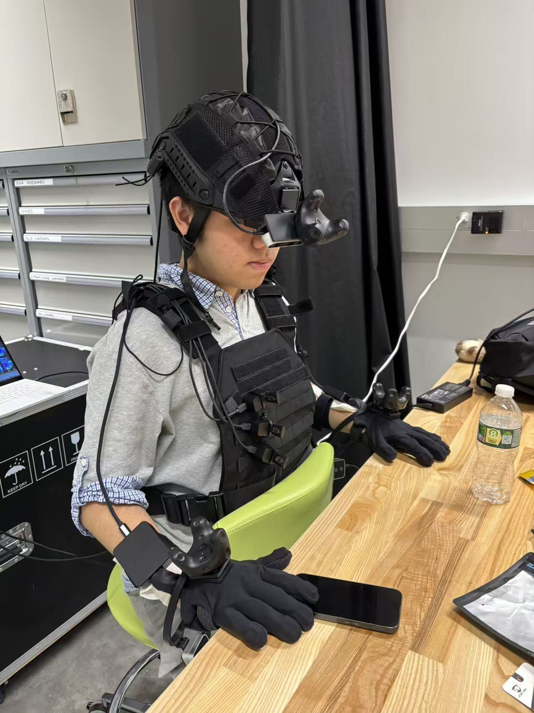
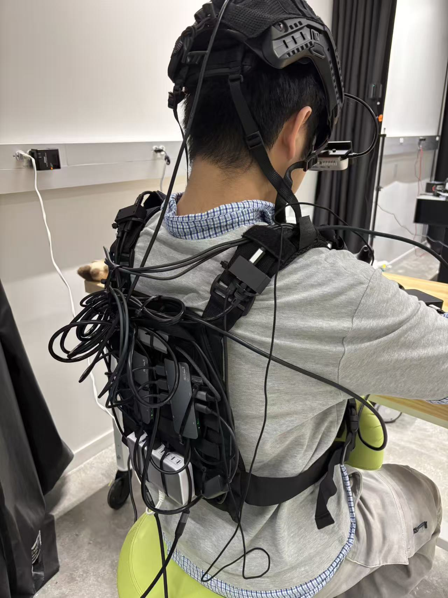

Glove capture · hands, trackers and depth in station coordinates
session 2026-10-16 14:50The video keeps every 3rd depth pixel to stay within the hosting size limit. The key frames below keep every depth pixel at full precision.
Key frames
Showing and hiding parts
- Open the scene tree: the tree icon at the top right of a key frame, or at the bottom right of the video (next to the speed control).
- Click an eye icon to hide or show that part; click ▸ to open the parts inside it.
cameras→head,left_wrist,right_wrist→points(depth) andfrustum(camera pose with its image)hands→left,right→mesh,skeleton,emf(glove coils)trackers→ the Vive trackers- Drag to rotate, right-drag to pan, scroll to zoom. In the video, what you hide stays hidden while it plays.
Wearable setup
Helmet with the head camera and a Vive tracker; tactile gloves with a Vive tracker and a camera on each wrist; the vest carries the USB hubs, cables and power.

